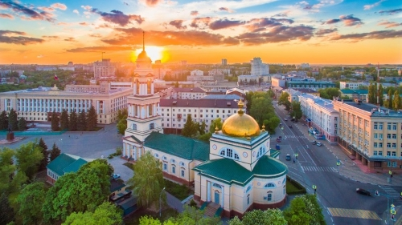
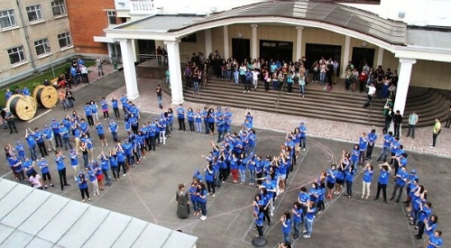

Я родился осенью 1971 года в городе Липецке, в семье мастера металлургического завода и заведующей магазином. Мой район детства называется "Сырский Рудник", потому, что там до 1960-х годов были шахты по добыче руды. Раньше Рудник от города отделяли поля. Он был тихим, экологичным местом. Сейчас он застроился, стал шумным, исчезли поля и огромное количество многоэтажек встали рядом с нашими домами. У меня есть старший брат и 11 двоюродных братьев и сестер, так как у мамы 5 родных братьев и сестёр.
Я закончил 10 классов в средней школе №6, мечтая поступить в институт иностранных языков в г.Горловке (ДОНБАСС), т.к. занимался немецким и он мне очень нравился. Но поступить не удалось, и я вернулся в Липецк. Чтобы не остаться перед армией без профессии я закончил с отличием СПТУ №26 на столяра-строителя. После училища я поступил в Политехнический институт г.Липецка на инженера-строителя на вечернее отделение. Отучившись год, после больницы, я бросил его. Затем восстановился, но так и не возобновил учёбу. Мне всегда нравилось рисовать и дома я подрабатывал хохломской росписью, что позволяло жить в 90-е. Одновременно я поступил в училище №7 и, закончив его экстерном, получил профессию художника лаковой миниатюры (Палех). В 1995 году я навсегда уезжаю в г.Москву и, работая в турецкой строительной компании, поступаю в 1996 г. во Всероссийскую Государственную налоговую академию (ВГНА) на юридический факультет, сейчас это Финансовый Универститет при Президенте РФ. В 2001 я получаю профессию юриста.
У меня очень многочисленная родня, но так сложилось, что все они теперь далеко. Но к счастью у меня есть семья. Я женат и у меня есть двое прекрасных сыновей 17 и 18,5 лет. Настольные игры наше любимое времяпрепровождение. Уже давно в нашей семье имеются домашние животные, а именно: собака Скотч-терьер (пшеничный окрас), и 2 кошки (рыжая и белая). Также держим аквариум с различными рыбками, у нас даже есть большой карп длиной 23 см. Самым первым животным для маленьких сыновей стала карликовая крольчиха, она пережила среднюю продолжительность 7-8 лет жизни кроликов и прожила 10 лет. Животные дествительно становятся членами семьи, ранее я этого не понимал. С ними весело и забавно, много курьёзных случаев. Ну и конечно же у детей вырабатывается чувство ответственности.
У меня, как и у всех заинтересованных, современных людей, есть свои увлечения. Хобби обогащает внутренний мир. Я имею небольшую коллекцию монет России, несколько альбомов негашёных почтовых марок разной тематики, коллекция советских фарфоровых статуэток разных видов, также осталась с детства коллекция стереооткрыток и календариков. Занимаясь фотографией с 12 лет я скопился огромный архив ч/б и цветных фотопленок, за что мне благодарна моя многочисленная родня. Иногда я монтирую фильмы из видео своей семьи и родственников, на мой взгляд получается неплохо. На своей машине я провез семью по почти всем городам Золотого и Серебрянного кольца. Посетил все кремли России кроме Смоленска и Тобольска, а также множество монастырских комплексов. Меня всегда привлекала русская церковная архитектура.